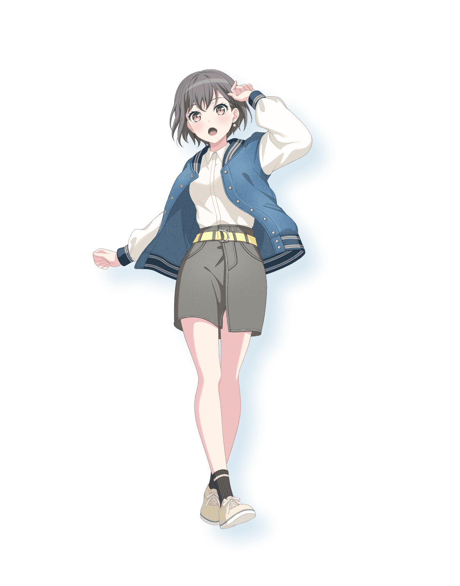

一輩子的樂團-----MyGO!!!!!
教授這真的是我做的，希望您能看完

在這篇文章中，我將分享什麼是MyGO!!!!!
一：少女樂團
首先，我們需要了解甚麼是少女樂團。
少女樂團（Girl Band / All-Girl Band），顧名思義就是由女性成員組成的樂團。她們和一般的樂團一樣，有主唱、吉他手、貝斯手、鼓手，甚至有時候還會加上鍵盤或其他樂器。
音樂風格：少女樂團並不是指特定的音樂類型，她們可能玩搖滾、流行、金屬、爵士等各種風格。
特色：成員都是女生，舞台形象通常會展現青春、活力、或是帥氣、酷炫的一面。這跟「女子偶像團體」不同，少女樂團更強調「自己演奏音樂」，而不僅僅是唱跳。
吸引力：除了音樂本身，觀眾常常會被她們的默契、樂器技巧、舞台氛圍，以及「女生展現樂團力量」的形象所吸引。
例子：在日本，少女樂團是一個相當受歡迎的文化，例如 SCANDAL、Silent Siren，還有動漫企劃中的 BanG Dream! 系列樂團。而MyGO正是屬於這樣的少女樂團。
二：MyGO!!!!!成員
高松燈（高松 燈（たかまつ ともり），聲：羊宮妃那）
主唱。故事設定為羽丘女子學園高中一年級生，感受性跟普通人不同，被稱為「羽丘的怪女生」。
千早愛音（千早 愛音（ちはや あのん），聲：立石凜）
節奏吉他手。故事設定為羽丘女子學園高中一年級生，成績優秀。使用樂器為 ESP ULTRATONE。立石稱她在姐姐的影響下玩過木吉他，但電吉他就幾乎沒碰過，在加入 MyGO!!!!!
後才開始學電吉他。
要樂奈（要 楽奈（かなめ らーな），聲：青木陽菜）
主音吉他手。故事設定為花咲川女子學園中學三年級生，不時在 Live House「RiNG」出沒。使用樂器為 ESP POTBELLY。青木自 5
歲起就彈鋼琴，中學起自學木吉他，高中至大學都在學習古典音樂。

長崎爽世（長崎 そよ（ながさき そよ），聲：小日向美香）
貝斯手。故事設定為月之森女子學園高中一年級生。使用樂器為 ESP GB。小日向稱她在《BanG Dream!》的影響下開始玩貝斯，第一首練習的歌曲是 Poppin'Party 的《STAR
BEAT!～ホシノコドウ～》。
椎名立希（椎名 立希（しいな たき），聲：林鼓子）
鼓手。故事設定為花咲川女子學園高中一年級生，在 Live House「RiNG」打工。使用樂器為 Pearl MASTERS MAPLE GUM
系列爵士鼓。林在學生時期時，在吹奏樂部負責打擊樂器，有過打流行鼓和爵士鼓的經驗。
三：代表曲介紹
「壱雫空」：

這首歌是 MyGO!!!!! 的代表作之一。它充滿了力量和希望，節奏感很強，很適合在需要振奮精神時聽。這首歌描繪了成員們如何跨越隔閡，找到彼此，並一同追逐夢想的故事。
「春日影」：
 這首歌在樂團的故事中佔據了關鍵地位。它不僅是一首動聽的歌，更承載著角色間的深厚情感。透過這首歌，能感受到他們音樂中既有掙扎，又有溫暖的一面。
這首歌在樂團的故事中佔據了關鍵地位。它不僅是一首動聽的歌，更承載著角色間的深厚情感。透過這首歌，能感受到他們音樂中既有掙扎，又有溫暖的一面。
「迷路日々」：
 如果想更深入地了解他們音樂中那種迷惘和不確定性的主題，這首歌是很好的選擇。它以一種較為內斂的方式，表達了在現實中感到迷失的心情，非常能引起共鳴。
如果想更深入地了解他們音樂中那種迷惘和不確定性的主題，這首歌是很好的選擇。它以一種較為內斂的方式，表達了在現實中感到迷失的心情，非常能引起共鳴。